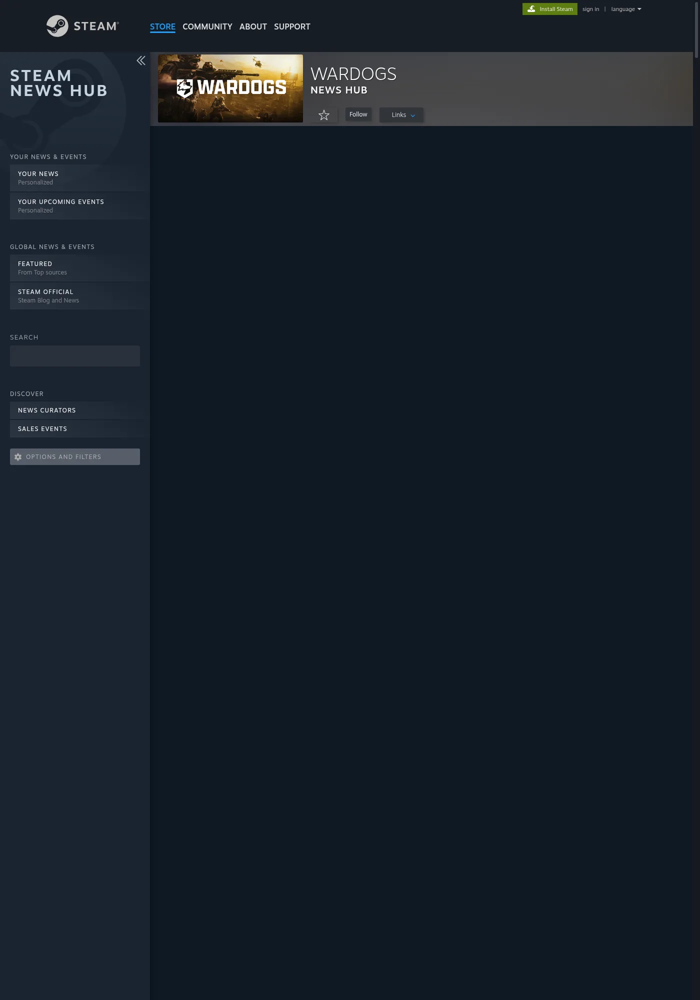

Last checked 14 Sep 2026 · Steam Early Access. Guides may change after patches.
WARDOGS Error 1628505091: Failed to Connect / Join Timed Out (EA Fix Path)
TL;DR: Error 1628505091 is JOIN TIMEDOUT — “Failed to connect to the server in a reasonable time.” That’s a failed join handshake, not a ban and not a broken install. Decide widespread vs local, install Launch Stability Hotfix #1 (close → Steam download → relaunch → wave queue), then try one other server/region. Stale counts (~70/100 shown) can still reject you. VPN/hotspot are diagnostic tests, not cures. Deep status → Servers Down / Queue / Access Denied. Local crash → Crashing / Won’t Launch. Code table → Error Codes Hub.
Last checked 2026-09-13 (Early Access).

What JOIN TIMEDOUT / 1628505091 actually means
Public guides (Nerdschalk, GearUP Booster, LagoFast) and launch-day Steam reports frame 1628505091 as a server-join timeout: your client started a join to a listed server and did not finish inside the allowed window. Nerdschalk (updated Sep 12, 2026) says there is no public official Bulkhead glossary definition. Read the full dialog — don’t invent a root cause on your PC.
| Field | Public wording (dated) | Not this |
|---|---|---|
| Code | 1628505091 |
Not an official “ban ID” |
| Banner | JOIN TIMEDOUT (GearUP framing) |
Not a graphics/FPS failure |
| Body | Failed to connect to the server in a reasonable time | Not proof of corrupted game files by itself |
| Timing (community) | Often after leaving login queue, after a kick, or when joining a server that still shows slots (LagoFast) | Not the same as “won’t launch” / Elytra |
| Official definition | No public Bulkhead glossary entry found as of 2026-09-13 | Do not invent a studio definition — public lead meanings only (GearUP/Nerdschalk) |
Working rule: read the full dialog. Timeout + this code → tree below. If you also see Reason: Cheating, Permanent, or Your account has been banned, stop — different path (often cited as 1147405307) on the Error Codes Hub.
Handshake vs other failures
| You did | Dialog | Class | Go to |
|---|---|---|---|
| Still in / bounced from login queue with auth text | Failed to authenticate / Access Denied (no ban reason) | Auth / wave | Servers |
| Left queue; Server Browser loaded; join fails with timeout | JOIN TIMEDOUT + 1628505091 |
Join handshake | This page |
| Join rejected with “Server queue is full” | 1147405316 |
Capacity | Servers / Error hub |
| Game never opens / crash dump / Elytra | Exception / WD-LO14 / black screen | Local client | Crashing |
| Explicit Cheating + Permanent + banned | 1147405307-style |
Account action | Error hub — appeal |
Decision tree: widespread vs local (print this)
Use the first true branch. Do not skip to reinstall.
SEE 1628505091 / JOIN TIMEDOUT?
│
├─ Many friends / Steam / Discord reporting same join fail RIGHT NOW?
│ ├─ YES → WIDE: install Hotfix #1 path → WAIT → do not reinstall
│ └─ NO → continue
│
├─ Server Browser blank / stale / every server times out?
│ ├─ YES → WIDE or region-wide: status check → [Servers hub](../wardogs-servers-down/)
│ └─ NO → continue
│
├─ One server times out; another in same region joins?
│ ├─ YES → LOCAL-TO-SERVER: refresh once → pick non-full server
│ │ (stale slot counts are common — see table below)
│ └─ NO → continue
│
├─ Only “almost full” (1–2 free / ~70–90 shown) servers fail; emptier ones work?
│ ├─ YES → SLOT-RACE / STALE COUNT: avoid racing the last seats
│ └─ NO → continue
│
├─ Wi-Fi fails; Ethernet or phone hotspot succeeds once?
│ ├─ YES → LOCAL-ROUTE: fix home Wi-Fi / ISP route (test, not permanent VPN)
│ └─ NO → continue
│
├─ Failures only at evening peak / one region / cross-region?
│ ├─ YES → ROUTE-CONGESTION pattern (GearUP): off-peak or nearer region test
│ └─ NO → continue
│
└─ Still only you, after Hotfix + one clean Steam restart + file verify?
→ Collect screenshot + region + time → support / Discord paste
Boundary cases
| Edge case | Do this | Don’t |
|---|---|---|
| Timeout right after Hotfix #1 download | Confirm Downloads = 100%; one Steam Exit; then retest | Assume “Hotfix broke joining forever” |
| Timeout + Access Denied on next attempt | Split: timeout = this page; Access Denied = Servers | Mash Join on the same server |
| Friends join; you timeout on every server | Hotspot comparison → verify files → firewall allow Steam/WARDOGS | Reinstall first |
| You join one server, timeout on another | Treat as session/capacity, not “game install dead” | Change graphics presets |
| Pre-EA screenshots from Sep 7–9 | Calendar gap — ignore as current evidence | Recycle as “servers still down” |
| Exact ban language present | Leave this page → Error hub | Infer ban from 1628505091 alone |
60-second checklist
| # | Check | Pass? | Next |
|---|---|---|---|
| 1 | Full dialog = JOIN TIMEDOUT + 1628505091 (no ban reason) |
Y/N | If ban text → Error hub, not this ladder |
| 2 | Steam Downloads shows WARDOGS update pending / installed | Y/N | Close game → finish update → relaunch |
| 3 | Identical reports in last 15–30 min (Steam Discussions / friends) | Y/N | If yes → wait; skip local surgery |
| 4 | Server Browser loads; ≥1 other server in region accepts join | Y/N | If yes → capacity/session, not “game broken” |
| 5 | Avoided 1–2-slot / stale ~70/100 “ghost capacity” servers | Y/N | Pick clearer free capacity once |
| 6 | One hotspot or Ethernet test changes outcome | Y/N | If yes → route/ISP; do not reinstall |
| 7 | File verify already run after services look healthy | Y/N | Only then verify; still no factory-reset router |
What changed after Launch Stability Hotfix #1 (2026-09-10)
Developer G_Medlin (Steam discussion Launch Stability Hotfix #1, Sep 10 @ ~1:28pm) published a forced client restart path. Press (mp1st) described the package as a 200+ MB client download. Studio targets:
- Players unable to join servers
- Players unexpectedly kicked during play
- Extended login queue times
Hotfix #1 restart path (do this first)
| Step | Studio sequence | Note |
|---|---|---|
| 1 | Close WARDOGS completely | Tray + Task Manager if it sticks |
| 2 | Download the latest client update via Steam | Open Steam → Downloads; wait for 100% |
| 3 | Relaunch | Expect return to login queue |
| 4 | Controlled batches | Studio admits players gradually — do not spam cancel/requeue |
| 5 | Monitor | Studio said they would monitor post-hotfix overnight |
| 6 | Extra restart (press) | mp1st: studio may perform another server restart → momentary logout is expected |

After Hotfix #1 — community spillover (not official)
Players in the same locked Hotfix #1 thread (~680 posts) reported new symptoms immediately after the update. Cite as community reports, not Bulkhead definitions:
| Community report | Treat as | Go to |
|---|---|---|
| “got kicked… now it Says access denied after the HotFix” | Auth / entitlement / wave gate | Servers hub |
| “after the update I am now getting failed to authenticate online services” | Auth spillover | Servers hub; code 1147405308 lead |
| “server auth failed” / “authentification doesn’t work anymore” | Auth spillover | Servers hub |
| “Unable to launch WARDOGS / Error code: WD-LO14-c70b81e405df” | Launch/auth edge | Crash + Error hub — do not invent meaning |
Still JOIN TIMEDOUT / 1628505091 |
This page | Continue tree after confirming update installed |
Do not claim Hotfix #1 “fixed 1628505091 forever.” Nerdschalk notes a Sep 11 studio follow-up still monitoring — that is not a per-region green light. Stamp: verified path exists; outcomes vary by region/wave as of 2026-09-13. As of 2026-09-13 Steam News, the next titled studio update is SCHEDULED MAINTENANCE & PATCH 0.11 (Mon Sep 14 ~1h, server-browser focus) — no public Steam News titled Hotfix #2 found; Hotfix #1 remains the launch-day stability process post.
Server Browser, region, and stale slot counts
Closed-beta and booster writeups note region-scoped browser behavior. LagoFast adds a launch-day pattern: displayed counts can lag while players join, leave, or get removed — servers showing roughly 70/100 still returned Full, Failed, or 1628505091.
Browser branch: symptom → step
| You see | Read | Next | Stop if |
|---|---|---|---|
| Browser blank / never loads | Service or region filter | Status habit on Servers | Spamming Refresh |
| List loads; every join → 1628505091 | Widespread handshake / gate | Hotfix confirm → wait | Local GPU changes |
| One named server times out; neighbor joins | Bad session / that instance | Refresh once; pick other non-full | Chasing the same name |
| Server shows 1–2 free slots → timeout/full | Slot race | Choose clearer free capacity | Join spam |
| Server shows ~70/100 → still timeout | Stale count (community) | Try lower displayed count once | Conclude “my internet is too slow” alone |
| Only cross-region joins fail | Long route / congestion | Prefer nearer region for test | Permanent distant-region “fix” |
| Wi-Fi fails; Ethernet/hotspot OK once | Home route variable | Fix Wi-Fi/router; VPN only as A/B test | Always-on booster as “required” |
| Action | Why | Stop if |
|---|---|---|
| Confirm Region matches where you intend to play | Wrong region → long routes / empty lists | public lead — GearUP Closed Beta region selector note; confirm EA label |
| Refresh once, wait for list to settle | Spam refresh can worsen perceived timeouts | List stays blank → status path |
| Avoid servers with 1–2 free slots at peak | Slot races; your join may expire mid-handshake | You keep timing out on “almost full” only |
| Try a second non-full server in the same region | Isolates one bad session vs all connectivity | Every server times out → widespread |
| Do not jump to a distant region as a “fix” | May join faster but ruin ping | Only as deliberate cross-region experiment |
Cross-link: capacity-full code 1147405316 (Server queue is full) is a different dialog — see Error Codes Hub and Servers.
VPN / hotspot: test, not cure
| Tool | Use as | Don’t claim |
|---|---|---|
| Phone hotspot (one session) | Prove home Wi-Fi/router path is the variable | “Hotspot fixes WARDOGS” |
| Temporary VPN off/on | See if a VPN was breaking the join path | “Buy VPN to fix 1628505091” |
| Route-optimizer ads (GearUP/LagoFast etc.) | Optional third-party; label as untested / marketing here | Verified studio fix |
| Permanent always-on VPN | Only if you already needed it for other reasons | Required step on this page |
Order: Hotfix → status → one other server → Ethernet/hotspot test → Steam full exit → file verify. Never lead with VPN marketing. LagoFast itself notes route tools cannot fix an overloaded server, remove a queue, or repair a failed server-side restart.
Do / Don’t
| Do | Don’t |
|---|---|
| Install current client via Hotfix #1 path | Leave the game open overnight and assume you have the hotfix |
| Decide widespread vs local in ≤2 minutes | Reinstall because one popular server timed out |
| Screenshot the full dialog (code + text) | Report only “doesn’t connect” to support |
| Wait in wave queue after relaunch | Spam cancel → requeue every 10 seconds |
| Treat stale ~70/100 counts as unreliable | Assume fiber speed guarantees a join |
| Cross-check Servers for Access Denied / auth | Assume timeout = ban |
| Link crash symptoms to Crashing | Change graphics settings to “fix” join timeouts |
Safe fix ladder (local branch only)
Run only after Hotfix is installed and status does not look like a global outage.
| # | Step | Signal | Stop |
|---|---|---|---|
| 1 | Confirm update installed; one clean relaunch | Queue or browser appears | If Access Denied → Servers hub |
| 2 | One different non-full server, same region | Join completes or new distinct error | New code → Error hub |
| 3 | Steam → Exit (not tray); relaunch Steam + game | Fresh auth ticket | — |
| 4 | Pause downloads / cloud sync / large uploads | Fewer mid-handshake stalls | — |
| 5 | Ethernet or hotspot comparison test | Outcome changes → home route | Revert experiments that break other apps |
| 6 | Allow Steam + WARDOGS through Windows Firewall if blocked | Isolates local block | Do not disable security permanently without noting it |
| 7 | Verify integrity of game files | Steam repairs mismatched files | Useful if update incomplete; still no capacity fix |
| 8 | Overlay / firewall only if join fails and other online games work | Isolates local block | If client crashes instead → Crash page |
If the client crashes, black-screens, or never reaches menu: leave this page → Crashing / Elytra.
Differentiate vs Nerdschalk / GearUP / LagoFast
| SERP gap | This page |
|---|---|
| Linear “6 steps” lists | Widespread vs local decision tree + boundary cases + printable checklist |
| Hotfix mentioned once | Dedicated what changed after Hotfix #1 + community spillover table with paraphrased Steam quotes |
| VPN framed as Method 1 | VPN/hotspot as test not cure; booster ads labeled optional |
| No stale-count warning | Explicit ~70/100 ghost-capacity pattern (LagoFast) |
| Single error silo | Sibling links: Servers, Crash, Error hub |
| Ban confusion | Explicit: 1628505091 alone ≠ ban; contrast 1147405307 |
| No version stamp | 2026-09-13 EA stamp; |
Related error spillover
| Code / symptom | Lean | Link |
|---|---|---|
1628505091 JOIN TIMEDOUT |
Join handshake timeout | This page |
1147405316 Server queue is full |
Capacity | Servers / Error hub |
1147405307 Cheating / Permanent ban text |
Account action | Error hub — appeal path |
1147405308 Failed to authenticate (public lead) |
Auth / queue | Servers |
| Access Denied / auth failed post-Hotfix #1 | Wave / auth | Servers |
| Crash / Elytra / never launches | Local client | Crashing |
WD-LO14-… (community, e.g. WD-LO14-c70b81e405df) |
public lead — Steam Hotfix #1 reply; official meaning none | Error hub + Crash |
Support paste block
Game: WARDOGS (Steam) AppID 1867240
Build / client update: [Hotfix #1 installed? Y/N — date]
Exact dialog: JOIN TIMEDOUT / ERROR CODE 1628505091 / Failed to connect…
Time (with timezone):
Region + server name (if shown):
Displayed player count at click:
Widespread?: yes / no / unknown (link if any)
Friends in region can join?:
Already tried: Hotfix restart / other server / Steam Exit / hotspot test / verify
Screenshot: attached
FAQ
Q: Does error 1628505091 mean I am banned?
A: No — not from this code alone. Nerdschalk: the timeout message is not proof of a ban. Ban-style dialogs under 1147405307 use explicit cheating/permanent language. Timeout text is a join failure.
Q: Is JOIN TIMEDOUT the same as “servers down”?
A: Sometimes overlapping, not identical. Global outage → many codes and blank browsers (Servers hub). A single-server timeout with a healthy list is often capacity, route, or a stale session.
Q: “I waited in queue for ages, then timed out on a server that still showed open slots.” Is that normal?
A: Community reports (LagoFast) say yes during launch stress: the list can lag; ~70/100 displays still returned Full / Failed / 1628505091. Refresh once, pick clearer capacity, or wait if every server behaves the same.
Q: Must I install Hotfix #1 again if I already played yesterday?
A: Confirm Steam shows no pending WARDOGS download. If you left the client open across the Sep 10 force-close window, fully exit and update once. As of 2026-09-13, Steam News lists Patch 0.11 maintenance (Sep 14) rather than a Hotfix #2 title — keep client current after that window.
Q: Will verifying files or reinstalling clear 1628505091?
A: Only useful on the local branch after services look healthy (incomplete update, isolated-to-you failures). Reinstalling does not create server capacity and will not fix a widespread incident — GearUP’s avoid list aligns.
Q: Can a VPN fix this?
A: Use VPN/hotspot only as a comparison test (Nerdschalk Step 5: disable VPN temporarily; try hotspot). Do not treat any booster/VPN as a verified Bulkhead fix on this page.
Q: “Even players with fast fiber report this timeout” — so is my ISP irrelevant?
A: Not always. Fiber does not rule out a route problem to the selected region (LagoFast / GearUP). If only you fail while friends join, still run the Ethernet/hotspot A/B test before declaring “service only.”
Q: I get Access Denied right after the hotfix update — same guide?
A: No. Steam Hotfix #1 replies (paraphrased): players reported Access Denied and “failed to authenticate online services” within minutes of the update. Follow Servers Down / Queue / Access Denied and the Error hub.
Q: Where do crash-to-desktop and Elytra failures go?
A: WARDOGS Crashing or Won’t Launch — Elytra. Store tag as of 2026-09-13: Uses Kernel Level Anti-Cheat Elytra.
Q: When should I contact support?
A: Nerdschalk: after latest client installed, regional friends can join, and you already tried a different server, clean Steam restart, and file verify — include full wording, code, time, region/server, screenshot.
Sources
- Nerdschalk — Error 1628505091 / Failed to Connect (updated Sep 12, 2026): https://nerdschalk.com/fix-wardogs-error-1628505091-failed-to-connect/
- GearUP Booster — WARDOGS Error Codes: https://www.gearupbooster.com/blog/wardogs-error-codes.html
- LagoFast — Error 1628505091 Join Timed Out (updated Sep 11, 2026): https://www.lagofast.com/en/blog/wardogs-error-code-1628505091/
- Steam — Launch Stability Hotfix #1 (G_Medlin, Sep 10, 2026): https://steamcommunity.com/app/1867240/discussions/0/562541634873654728/
- mp1st — Hotfix launch-day / 200+ MB note: https://mp1st.com/news/war-dogs-receives-hotfix-launch-day-players-encounter-server-instability-downtime
- Steam Store — WARDOGS AppID 1867240 (Elytra tag, EA facts): https://store.steampowered.com/app/1867240/WARDOGS/
- Sibling: Servers Down / Queue / Access Denied · Crashing / Elytra · Error Codes Hub